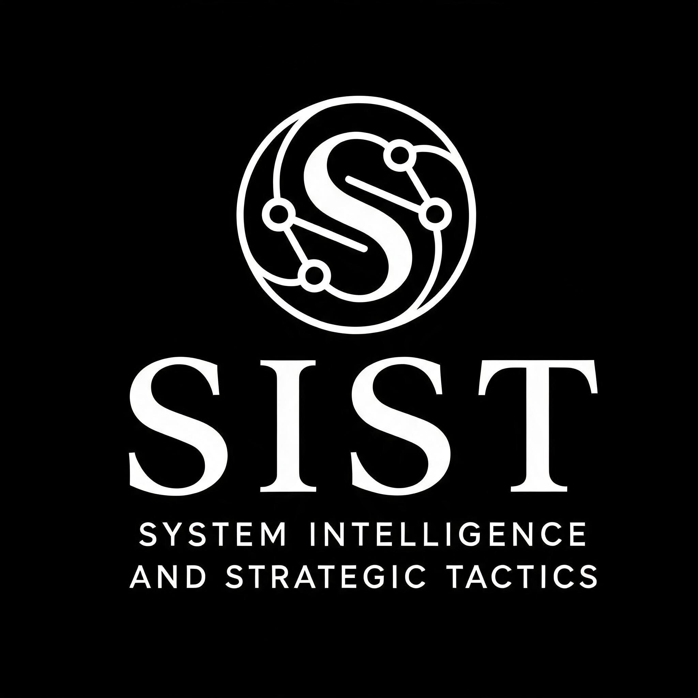

Public White Paper | Alexander Emilio Perez | July 2026
System Intelligence and Strategic Tactics (SIST™) is a proprietary multi-agent AI architecture designed and named by Alexander Emilio Perez. SIST™ uses a council-based framework under human authority to coordinate multiple AI systems toward higher-quality synthesis, verification, and decision support.
SIST™ was conceived, designed, and named exclusively by Alexander Emilio Perez. The SIST™ name, council framework, ENFORCER™ designation, and related terminology are original elements of the architecture.
The underlying AI systems referenced in SIST™ are third-party products and are not claimed as property of Alexander Emilio Perez. SIST™ is the architecture and protocol that coordinates those systems, not the systems themselves.
| Seat | Designation | System | Role |
|---|---|---|---|
| Seat 0 | ENFORCER™ | Alexander Emilio Perez (Human Operator) | Final human authority and approval point. The only non-AI seat. |
| Seat 1 | COUNCILMAN 1™ | ChatGPT (OpenAI) | Primary synthesis and language modeling seat. |
| Seat 2 | COUNCILWOMAN 2™ | Kimi (Moonshot AI) | Long-context analysis and document intelligence. |
| Seat 3 | COUNCILMAN 3™ | Perplexity (Perplexity AI) | Real-time research and citation verification seat. |
The ENFORCER™ seat is the human authority over all SIST™ operations. No output is final without human review and approval.
SIST™ is built around a structured review process in which the council seats contribute different strengths and the ENFORCER™ makes the final decision. The system is designed to improve clarity, reduce blind spots, and create more reliable outputs than a single-model workflow.
Detailed internal prompt logic, sentinel rules, and operational pipeline mechanics are intentionally withheld from this public version.
| Mark | Basis |
|---|---|
| SIST™ | Original architecture name; continuous use |
| System Intelligence and Strategic Tactics™ | Original full-form name |
| ENFORCER™ | Original human-authority seat designation |
| COUNCILMAN™ | Original council seat designation |
| COUNCILWOMAN™ | Original council seat designation |
| Adversarial Integration Protocol™ / AIP™ | Original protocol name |
SIST™ does not claim ownership of ChatGPT, Kimi, or Perplexity. It does not claim endorsement, partnership, or certification from OpenAI, Moonshot AI, or Perplexity AI. This public version is intended to establish authorship and preserve the high-level structure of SIST™ without disclosing proprietary implementation details.
I, Alexander Emilio Perez, declare that I am the sole creator of SIST™ and the related architecture described in this public white paper.
Alexander Emilio Perez
Austin, Texas
July 2026